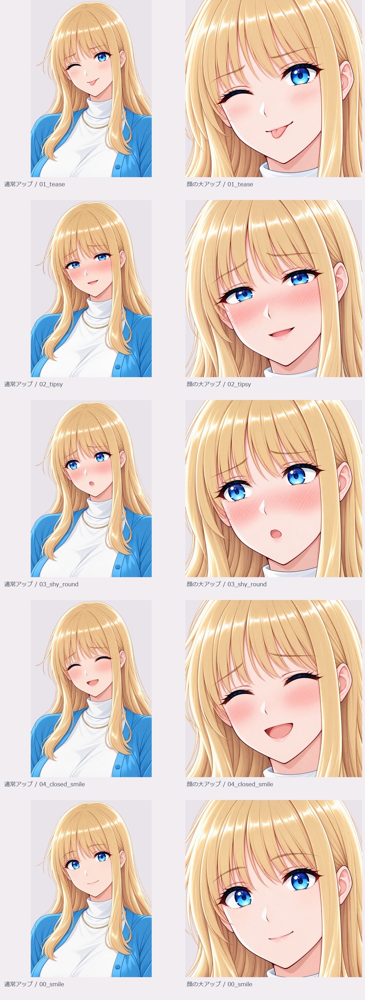

イタズラ・舌先・顔の大アップ

こちら・片目ウインク ／ 1 薄い ／ 片眉上げ ／ 短い舌先の笑み
片目ウインクと短い舌先でイタズラっぽさを表す。 顔の画角変更もネイティブ編集。単純な画素クロップではない。 ネイティブ生成・編集のため、表情以外の完全な画素一致は保証していない。
個別PNGを開く通常アップ4枚＋顔大アップ5枚。新しい表情は4種類で、画角違いを含む追加9画像です。酔いはref-06、赤面小口はref-01、閉じ目笑顔はref-08の表情を参照しました。

既存のヒロインの画風・髪・青い目・服装を参照したアップ。背景透過PNG9枚。通常アップは肩・上半身、顔大アップは眉・目・口・あごを中心にしたPNGです。比較用サムネイルは別表示です。43候補の採否一覧
こちら・片目ウインク ／ 1 薄い ／ 片眉上げ ／ 短い舌先の笑み
片目ウインクと短い舌先でイタズラっぽさを表す。 顔の画角変更もネイティブ編集。単純な画素クロップではない。 ネイティブ生成・編集のため、表情以外の完全な画素一致は保証していない。
個別PNGを開く
こちら・半目 ／ 3 強い ／ 柔らかな困り眉 ／ 小さな開き笑顔
ref-06の半目・赤面を参照。口は小さな笑みに調整。 顔の画角変更もネイティブ編集。単純な画素クロップではない。 ネイティブ生成・編集のため、表情以外の完全な画素一致は保証していない。
個別PNGを開く
左寄り ／ 3 強い ／ 柔らかな困り眉 ／ 小さな丸い開き口
ref-01の赤面・眉・小口を参照。横たわる姿勢は引き継がない。 顔の画角変更もネイティブ編集。単純な画素クロップではない。 ネイティブ生成・編集のため、表情以外の完全な画素一致は保証していない。
個別PNGを開く
閉じ目 ／ 2 中 ／ 柔らかな困り眉 ／ 開いた笑顔
ref-08の閉じ目・赤み・笑顔を参照。 顔の画角変更もネイティブ編集。単純な画素クロップではない。 ネイティブ生成・編集のため、表情以外の完全な画素一致は保証していない。
個別PNGを開く
こちら・片目ウインク ／ 1 薄い ／ 片眉上げ ／ 短い舌先の笑み
片目ウインクと短い舌先でイタズラっぽさを表す。 ネイティブ生成・編集のため、表情以外の完全な画素一致は保証していない。
個別PNGを開く
こちら・半目 ／ 3 強い ／ 柔らかな困り眉 ／ 小さな開き笑顔
ref-06の半目・赤面を参照。口は小さな笑みに調整。 ネイティブ生成・編集のため、表情以外の完全な画素一致は保証していない。
個別PNGを開く
左寄り ／ 3 強い ／ 柔らかな困り眉 ／ 小さな丸い開き口
ref-01の赤面・眉・小口を参照。横たわる姿勢は引き継がない。 ネイティブ生成・編集のため、表情以外の完全な画素一致は保証していない。
個別PNGを開く
閉じ目 ／ 2 中 ／ 柔らかな困り眉 ／ 開いた笑顔
ref-08の閉じ目・赤み・笑顔を参照。 ネイティブ生成・編集のため、表情以外の完全な画素一致は保証していない。
個別PNGを開く
こちら ／ 0 なし ／ 穏やかな弓眉 ／ 小さな笑み
前回の微笑みを顔中心にした画角違い。 顔の画角変更もネイティブ編集。単純な画素クロップではない。 ネイティブ生成・編集のため、表情以外の完全な画素一致は保証していない。
個別PNGを開く全9点は制作候補。人物・表情の完全な画素固定、他の全身素材への顔パッチ適合、ゲーム実機表示は未検証。